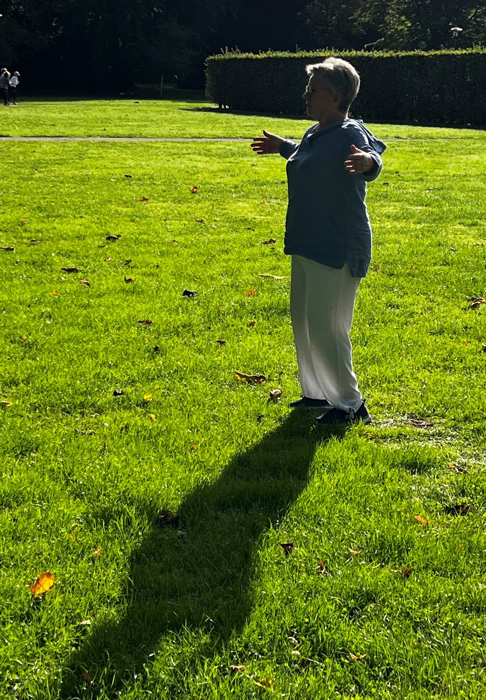
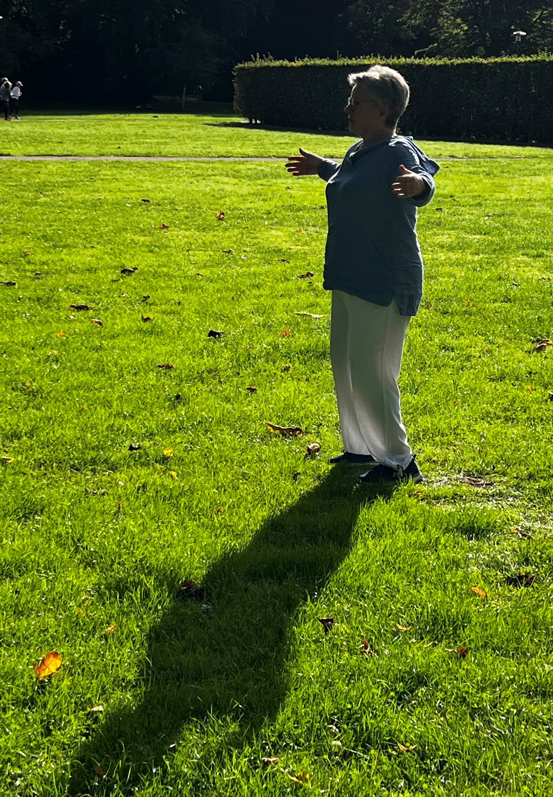

Qigong Kurse in Urdenbach
“Sehr abwechslungsreiches professionelles Training,- wirkt entspannend, fördert die Haltung, erhält das Gleichgewicht und macht Spaß.”

Bücherstr. 6 (ehem. Ballettschule)
Mittwochskurs 18-19
Sonntagskurs 10-11 Uhr
Langsame, fließende und bewusst ausgeführte Bewegungsabläufe kennzeichnen diese aus dem alten China stammenden Übungen. In unserem Kurs werden sie hauptsächlich im Stehen praktiziert (aber auch im Sitzen möglich). Oft wird Qigong „bewegte Meditation“ genannt. Es ist ein Training ohne Leistungsdruck in einer ruhigen entspannten Atmosphäre, die geistige Ruhe und Ausgeglichenheit fördert.
Der Kurs ist für Anfänger geeignet. Einstieg und kostenfreie Probestunde sind jederzeit möglich.
Keine Vorkenntnisse / Erfahrung / Voraussetzungen notwendig.
Ihr solltet dabei lockere Kleidung („Pyjama“) und bequemes Schuhwerk (keine Straßenschuhe) oder dicke Socken tragen.
Die Kursgebühr wird beim zweiten Termin, nach dem ersten Probetermin, vollständig im Voraus bezahlt.
Wegen der begrenzten Teilnehmeranzahl ist eine Anfrage/Anmeldung zur Probestunde per E-Mail notwendig.
Über mich
Yevgeniya (Geniya) Rimbach-Khersonska
Ich komme ursprünglich aus Kiew, studierte in der Ukraine Biologie und Chemie. Seit 2005 arbeite ich als Chemikerin bei einem großen Konzern in Düsseldorf.
Über 10 Jahren übte ich Tai Chi unter der Führung von Hr. Dr. Gerhard Holmer. Dann entdeckte ich für mich Qigong und traditionelle chinesische Medizin (TCM). Die Begeisterung war so groß, dass ich eine Ausbildung als Qigong-Kursleiterin und TCM-Therapeutin bei Shen Men Institut, Düsseldorf absolviert habe.
Seit 2022 leite ich Qigong-Kurse in Urdenbach und praktiziere selbst täglich. Mir ist wichtig eine angenehme Atmosphäre bei der Übung, daher versuche ich Balance zwischen dem genauen Ausführen der Bewegungen und Freude des Mitmachens zu finden. Wir sind alle verschieden und es ist nicht zu erwarten, dass es jedem und jeder gleich gut und einfach gelingt. Aber die lockere fröhliche Einstellung macht die mögliche Anfangs-Schwierigkeiten zu keinem ernsten Hindernis.
Ich freue mich auf jede Stunde, genieße unser Zusammensein. Mein Ziel ist erreicht, wenn ich dabei jemanden helfen kann, ruhiger und gelassener durch das Leben zu gehen. Positive Wirkung auf allgemeine Beweglichkeit, Gleichgewicht, Koordination und dadurch auch mentale Gesundheit kommt hinzu.

 

Rezensionen
Geniya ist mit sehr viel Herzblut dabei und leitet uns während einer Übungsstunde mit viel Wärme und Konzentriertheit durch die Übungen. Sie gibt immer wieder Einblicke in die Philosophie des Qigong, erklärt Wirkungsweisen der Übungen ohne dabei missionierend zu sein.
Die Leichtigkeit und Ruhe, die Geniya ausstrahlt, kann ich während einer Übungsstunde wunderbar aufnehmen.
Somit gehe ich nicht nur entspannt nach Hause - durch den Fokus auf Haltung, Bewegung, Atmung gelingt es mir oftmals den Kopf zu lüften und mit neuen Gedanken in den restlichen Tag zu starten.
Wunderbarer Nebeneffekt - eine gesündere Haltung, mehr Beweglichkeit, Stabilität und Balance.
Es ist zu einer bereichernde Gewohnheit geworden, zusammen mit tollen Teilnehmerinnen, den Himmel zu stützen, die Wolken zu teilen, wie eine Kiefer zu stehen und mit den Augen zu funkeln - möchte es nicht mehr missen!
Sonja L.
Kontakt und Anmeldungen
Kontakt per E-Mail an: qigong.urdenbach@gmail.com
Links
Allgemeines zum Thema TCM – Tai Chi – Qigong
15 Ausdrucksformen nach Prof. Jiao
Tai Chi warm-up and gentle stretching exercises
Stretching-Yoga (sanfte effektive Übungen mit Yogabasics):